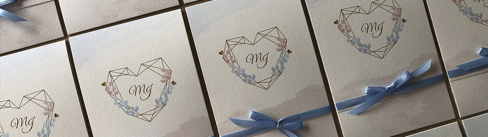

|| Como Funciona
1º Contacto
Entrem em contacto connosco por e-mail, ou facebook.Podem optar por continuar a corresponder pelo primeiro meio que escolheram ou então marcar uma reunião via Whatsapp, Skype ou presencialmente. Digam-nos o que pretendem quais as vossas ideias, os vossos gostos, contem-nos a vossa história, faremos o que estiver ao nosso alcançe para corresponder às espectativas e tornar o vosso evento muito especial. Muitas vezes nesta fase surge a pergunta relacionada com o orçamento, por essa razão,pedimos aos noivos que nos enviem uma referência visual ou que descrevam de forma precisa a sua ideia, dessa forma fazemos uma estimativa do orçamento base tendo em conta o tipo de convite, peça ou serviço que pretendam adquirir incluindo quantidades e prazos de entrega.
2º Escolha o serviço
Prestamos três tipos de serviços. Criamos convites exclusivos e totalmente personalizados, e adaptamos modelos já existentes. Estes dois serviços terão orçamentos distintos, dada a sua natureza (criação de um original/adaptação de um modelo). O terceiro serviço implica a criação do estacionário do vosso evento. Desde o convite à embalagem ou etiqueta das lembranças adoramos criar uma linha visual harmoniosa entre todas as peças: convite, ementa, marcador de mesa, seating plan, porta alianças, painéis com mensagens, livros de honra, lembranças, entre outras que fazem parte do quotidiano do nosso atelier. Podem encomendar apenas uma peça ou várias consoante as vossas necessidades. Não é necessário escolher logo de início esta opção podem optar por ela a qualquer momento do processo.
3º Adjudicação
Os nossos orçamentos incluem instruções de pagamento, que deverão ser cumpridas, em duas fases: adjudicação e produção. O pagamento da adjudicação dá início ao trabalho (em caso de desistência, após o início do trabalho, não será devolvido).
4º Processo criativo e aprovação
Habitualmente após duas semanas são enviadas até 2 maquetes para a vossa selecção do convite final. Uma das maquetas escolhidas pode sofrer alterações, se necessário, até que fiquem totalmente satisfeitos com o resultado. Havendo uma aprovação final, é feita uma prova em papel, que é enviada para a vossa morada.
5º Produção
Após a aprovação final da prova em papel, é feito o pagamento do restante valor e inicia-se o processo de impressão e acabamento.
6º Entrega
O tempo de entrega, tal como os orçamentos, depende sempre das peças a desenvolver, das quantidades a produzir e dos seus acabamentos. Serão sempre informados sobre os prazos ao longo do desenvolvimento do trabalho. A estimativa de entrega, em média, para os convites de casamento, é de 4 semanas.